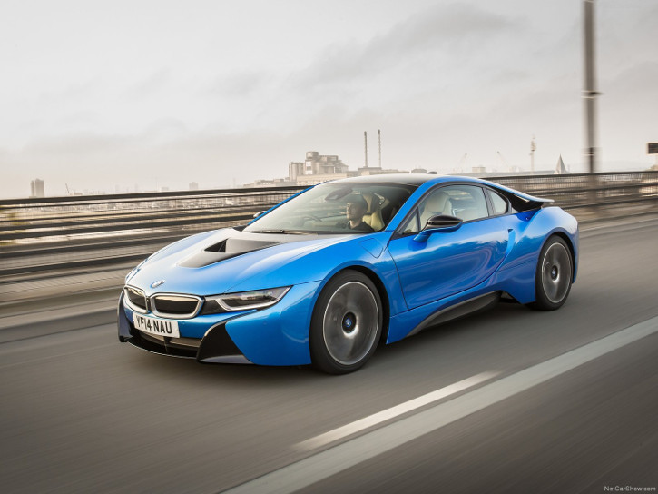

BMW i8
Specifications
Power: 357 hp
Torque: 570 Nm
0 to 100 kph: 3.6 s
Top Speed: 250 kph
Weight: 1540 kg
Vehicle Type:
mid engine, front and mid motor, 4 wheel drive, 4 passenger, 2 door coupe
Engine:
Type: (Hybrid) turbocharged inline 3, electric motor
Displacement: 1499 cc
Power: 228 hp @ 5800 rpm
Torque: 236 Nm @ 3700 rpm
Front Motor:
Power: 129 hp @ 4900 rpm
Torque: 250 Nm @ 0 rpm
Front Transmission:
2-speed automatic
Mid Transmission: 6-speed automatic with manual shifting mode
Price: $130,000; ₹ 2.3 crores
Related Links
Official site
More info @ wikipedia
Wallpapers
Youtube
Reviews
- 


{kind=link}
{kind=link}
{kind=link}
{kind=link}
{kind=link}
{kind=link}
{kind=link}
{kind=link}
{kind=link}
{kind=link}
{kind=link}
{kind=link}
{kind=link}
{kind=link}
{kind=link}
{kind=link}
{kind=link}
{kind=link}
{kind=link}
{kind=link}
{kind=link}
With its ultra-dynamic proportions, elegantly sporty lines, low-slung silhouette and innovative design features, the BMW i8 represents a new generation of sports car. Bringing together hallmark features of the BMW brand with the design language developed specially for BMW i cars creates a progressive aesthetic which faithfully communicates the performance attributes, efficiency and innovative premium character of the plug-in hybrid sports car.
The launch of the BMW i8 sees the world's first sports car to be purpose-built with sustainability in mind complete its journey from vision to reality. Its unmistakable, emotion-stirring looks can be put down to a prototype design that was first unveiled in the guise of the BMW Vision EfficientDynamics, meticulously refined for the BMW i8 Concept exhibited at the 2011 Frankfurt Motor Show and now adopted virtually unchanged for the production version. Both the exterior and interior of the emotionally-led 2+2-seater embody a revolutionary, pioneering take on the Sheer Driving Pleasure for which BMW is renowned. Clean, minimalist lines, homogeneous surfaces defined by a small number of crisp edges and function-focused details underline the forward-looking nature of the BMW i8.
As the second series-produced BMW i model on the road, the BMW i8 also reveals the versatility of the design language which is establishing itself as an unmistakable signature of BMW i cars. Its design signals lightness, safety, efficiency and pure driving pleasure - stand-out qualities that the BMW i8 plug-in hybrid sports car shares with the BMW i3, its pure-electric sibling conceived for agile and comfortable urban driving.
The key to this versatility is the innovative LifeDrive architecture, which opens up an exceptional degree of freedom for the design of BMW i cars. The central element of the Life module is the carbon-fibre-reinforced plastic (CFRP) passenger cell. The Life module is fixed to the aluminium Drive module, which houses all the drive and chassis technology. This distinctive two-way split is reflected on both the outside and the inside of the car by the visible layering and intertwining of different surfaces, with three-dimensional and flowing transitions between the Life module and Drive module accentuating the dynamic appearance of the BMW i8.
A length of 4,689 millimetres, width of 1,942 millimetres and height of 1,297 millimetres (including roof fin) give the BMW i8 typical sports car proportions. Its dynamic character is also reflected in its long bonnet, clearly visible aerodynamic aids, stretched roofline, short overhangs and long, 2,800-millimetre wheelbase. The pioneering combination of sporting ability and efficiency is translated into the design of the 2+2-seater with intoxicating élan - and with the signature BMW i design language to the fore. The car's wide track (1,644 millimetres at the front axle, 1,721 millimetres at the rear) completes the powerful dynamic presence generated by the car's proportions.
Exterior design: an aesthetic synthesis of dynamic appeal and pioneering technology
The design of the BMW i8 body is as groundbreaking as the plug-in hybrid sports car's concept as a whole. Hallmark BMW dynamics, lightweight design and efficiency are all expressed in the car's proportions, lines and surface design. The 2+2-seater is immediately recognisable as a BMW i model and a new-generation sports car.
The structure of overlapping and interlocking surfaces - lent additional emphasis by the car's colour scheme - also contributes to the unmistakable appearance of the BMW i8. This layering principle allows aerodynamic forms to be wrapped up in a progressively styled package, while powerfully formed wheel arches draw attention to the wide track of the BMW i8. The compact construction distinguishing both the electric motor and combustion engine allows the front and rear sections of the car to have a particularly low-slung design and thus accentuate its dynamically stretched flanks. The doors, which open forwards and upwards like wings, add extra intrigue to the sports car design of the BMW i8.
A signature feature of BMW i cars is the "black belt". On the BMW i8, it emerges in a "V" shape from the bonnet and extends back over the roof into the rear section of the car, where it frames the centre section of the rear apron. At the front end, the black belt is framed by the body-coloured apron and side panels, while at the rear it is overlapped by the "floating" roof pillars, which extend over the rear lights. Another element of the standalone BMW i design language is the "stream flow" contour of the side window styling. On the BMW i8 the stream flow also determines the path travelled by the air between the falling roofline and the character line rising through the rear section of the car's flanks towards the rear spoiler lip.
The front view of the BMW i8 exudes sporting ability in its purest form. Large front apron air intakes arranged over several levels generate a powerful feeling of depth. The extremely broad BMW kidney grille stretches over to the slim headlights, accentuating the width of the BMW i8 and its road-focused stance. The car's full-LED headlights adopt the hallmark U-shape of BMW i models. The dipped and high-beam light is emitted by a lens positioned on the far outer edge of the light units. The three-dimensional design of the light sources lends their appearance a distinctly sporty character.
The low-slung stance of the rear end and its horizontal, width-emphasising lines also provide a clear showcase for the dynamic potential of the BMW i8. The rear is bordered by the sculpted rear wheel arches. The sloping rear window opens high, allowing easy access to the storage compartment located underneath. The rear lights, reflectors and rear diffuser form a single visual unit that strengthens the car's already powerful appearance. Like the headlights, the intricately designed rear light clusters also feature the characteristic BMW i U-shaped design. The direction indicators are integrated above the rear lights into the downsweep of the roofline. All of the lights on the BMW i8 are LEDs as standard.
Visible efficiency: aerodynamic optimisation on a detailed level
The BMW i8 boasts a drag coefficient (Cd) of 0.26 and a fine aerodynamic balance. The low-slung bonnet, almost totally blanked off kidney grille, air flap control system, Air Curtains in the front apron, sealed underbody, contoured side skirts, "stream flow" lines of the car's flanks, and the air ducts between the rear lights and roof frame allow the air to be channelled extremely effectively as it hits the car.
The large, comparatively slim wheels with their bespoke, aerodynamically optimised design also help to quell efficiency-reducing turbulence - and their effect is reinforced by aeroflaps positioned behind the front wheels and ahead of the rear wheels. Precisely defined air flow across all areas of the body provides a balance between air resistance and lift designed to maximise driving dynamics and directional stability.
The paintwork adorning the side body panels and front and rear ends of the BMW i8 can be specified in a choice of four metallic colours: Sophisto Grey brilliant effect as well as the three finishes which have been created exclusively for BMW i - Crystal White pearl effect, Protonic Blue and Ionic Silver. All the paint finishes provide a striking contrast to the black belt. Depending on the colour chosen, the accent surfaces on the side skirts, at the rear and on the BMW kidney grille surround come in BMW i Blue or Frozen Grey metallic.
Interior design: customary BMW driver focus, low seating position, visible lightweight engineering
Future-focused design also dominates the interior of the BMW i8. The driver orientation typical of BMW cockpit design is complemented by progressive elements which highlight the sports car's dynamic flair and light weight. The driver, front passenger and rear passengers sit low down - in traditional sports car style - in lightweight seats. Exposed CFRP sections of the passenger cell visible around the entry apertures when the doors are opened provide a reminder of the low weight of the BMW i8.
The instrument panel of the BMW i8, with its horizontal lines emphasising the width of the interior and a structure determined by the "layering" principle, creates a light yet powerful impression. The arrangement of the overlapping, three-dimensional segments is complemented by a contrast-rich colour scheme. The layering approach also finds its way, through dynamically curving lines, into the design of the centre console, which is home to the gear selector, the Controller for the iDrive operating system, the start/stop button, the eDrive button and the Driving Experience Control switch. The iDrive system's Control Display comes in a freestanding 8.8-inch format. A bespoke sports steering wheel with multifunction buttons and the Navigation System Professional are included as standard in the BMW i8. Also standard is the multifunction instrument display, whose content and presentation formats take their cue from the driving mode selected.
Premium-calibre sustainability: leather tanned with olive leaf extracts, top-quality textiles made from recyclable PET and virgin wool, biopolymer plastic based on castor oil
A range of innovative methods form the basis for the use of natural and recycled materials, as well as their ecologically sound processing and supreme quality. The standard leather trim in the BMW i8 extends beyond the seat surfaces to parts of the centre console, instrument panel and interior door panels. The BMW Group is the world's first carmaker to employ an environmentally friendly process for the treatment of leather. The leather for the surfaces of the seats and the instrument panel is tanned using olive leaf extract. This avoids the creation of environmentally damaging production residue as well as giving the leather a particularly high-quality and natural look. The cattle hide comes from Germany, Austria and Switzerland, and the natural treatment process takes place in Germany. This keeps distances to the BMW i8 production facility at BMW Plant Leipzig pleasingly short.
The textile materials used in the interior of the BMW i8 for accent strips on the seats and door trim, the roof liner, the floor mats, the body pillar trim and floor covering are made in an innovative recycling process. The polyester granules that serve as the source material are produced from materials including recyclable PET and are combined with 40 per cent virgin wool in a special process to create a high-grade cover fabric. The manufacture of the key for the BMW i8 involves another innovative form of raw material production - its casing is made from a biopolymer based on castor beans. The oil gained from the beans is mixed with 30 per cent glass fibre to make an extremely high-quality and robust material.
It's not just the high proportion of reprocessed plastics that demonstrates the role played by the use of recycled materials in the BMW i sustainability concept: the majority of the aluminium used in the BMW i8 is either gained through recycling or produced using renewable energy.